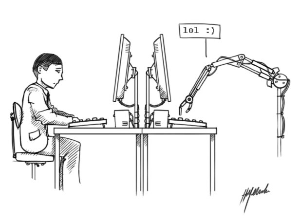

Aportaciones
No todo tiene solución
En 1936 publicó el artículo “Sobre números computables, con una aplicación al Entscheidungsproblem” (traducible como “problema de decisión”), que resultó ser el origen de la informática teórica. En él definía qué era computable y qué no lo era. Lo computable era todo aquello que podía resolverse con un algoritmo (conjunto de instrucciones finito que, mediante pasos sucesivos, lleva a la solución de un problema). El resto eran tareas no computables.
Turing demostró que había problemas irresolubles, es decir, sin solución algorítmica. Para dar forma al concepto ideó la famosa máquina que lleva su nombre, un dispositivo imaginario que, una vez construido, podría ejecutar cualquier operación matemática resoluble por medio de un algoritmo, y que, en el caso de programarse, se transformaría en un ordenador. Pero Turing jamás llegó a materializar su proyecto, al no contar con los medios técnicos necesarios.
Antes de la existencia de los ordenadores, Turing no solo teorizó sobre la base de su funcionamiento, sino que incluso predijo sus futuros fallos. Así, mientras ideaba su máquina, definió el problema de parada, o halting problem , al afirmar que no existe ningún algoritmo general que pueda averiguar si una operación iniciada será finita o no. Turing vaticinó de este modo que los ordenadores se “colgarían”. Hoy, cuando una computadora cae en un bucle infinito, debemos conformarnos con reiniciar la máquina.
Rompiendo códigos
En septiembre de 1938, el gobierno británico lo llamó para dirigir un equipo en Bletchley Park, el centro de criptografía del país. Su sección, la Hut 8, responsable del criptoanálisis naval alemán, tenía como principal misión descifrar los mensajes de las máquinas Enigma. Estas transmitían órdenes codificadas a los submarinos nazis que operaban en el Atlántico.
Turing lo logró. De su ingenio nació el diseño de las primeras máquinas Bombe, dispositivos electromecánicos, construidos exclusivamente para romper los códigos de Enigma. Se produjeron 211 unidades en Bletchley Park y unas 120 en Estados Unidos. Pero, terminada la guerra, el primer ministro británico ordenaría destruirlas junto con los documentos vinculado a su creación. La contribución de Turing en Bletchley Park se reveló crucial para el desenlace de la guerra a favor de los aliados.
Máquinas con cerebro
Tras el conflicto, Turing se planteó el reto de construir una máquina que tuviera las mismas capacidades que el cerebro humano. Intervino en el diseño de la ACE (siglas en inglés de Automatic Computer Engine), un ordenador digital electrónico concebido para resolver más de un propósito y capaz de almacenar un programa en su memoria.
La prueba que te dice si las máquinas pueden pensar
Alan Turing también inventó un método que lleva su nombre “El Test de Turing” , el cual consiste en un examen para verificar si las máquinas son realmente inteligentes, es decir se le hace una serie de preguntas a la máquina y si esta tiene respuestas similares a las de un ser humano se le puede considerar como inteligente. Esto puede parecer muy sencillo pero ha dado paso para estudios más profundos sobre Inteligencia Artificial y en un futuro cercano será aplicado en sistemas digitales como chatbots y probablemente en robots que limpien tu casa
